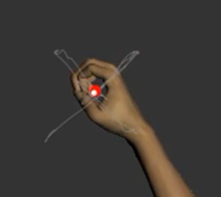
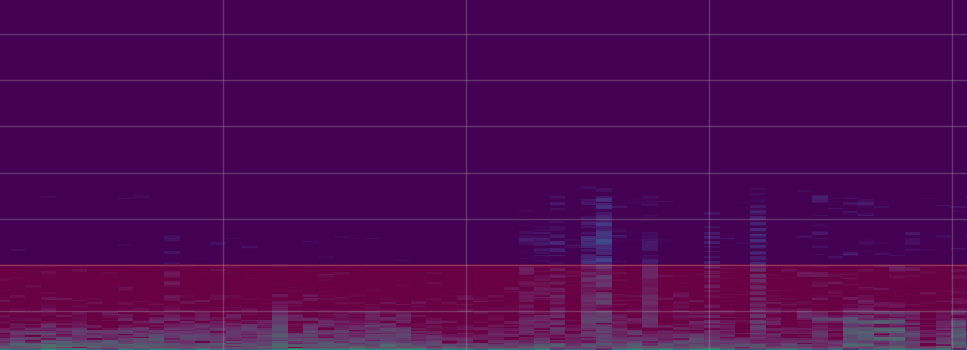
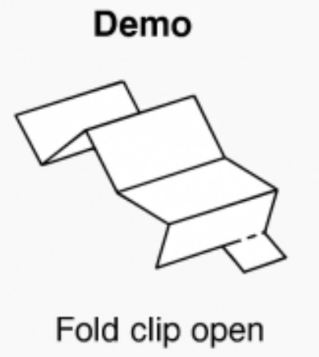
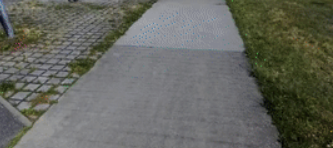

A full list also lives on my Google Scholar profile.

Evaluated the Kinarm end-point robot's visually guided reaching test in people with multiple sclerosis. Reaction time showed strong criterion and convergent validity against the Nine-Hole Peg Test, supporting robotic assessment as a tool in clinical neurorehabilitation.

Combines cycle segmentation and spectral feature extraction on the ICBHI dataset with an LLM-based natural-language querying layer, using structured textualization and consistency checks that cut hallucinated answers by 34%.

A bi-stable, origami-derived clip mechanism that lets modular soft-robotic panels snap between two stable folded states without motors or adhesives, aimed at fast, reconfigurable soft interfaces.

A sensor-driven classifier that identifies the terrain under a robotic prosthesis in real time, feeding that context back into the control loop so gait adaptation can respond to the surface instead of a fixed gait pattern.